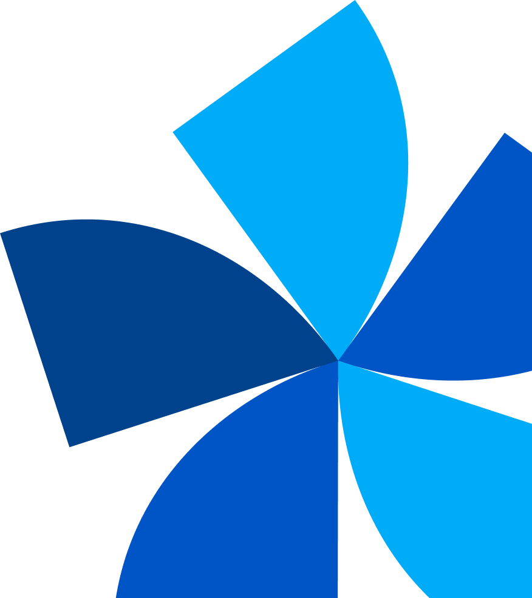
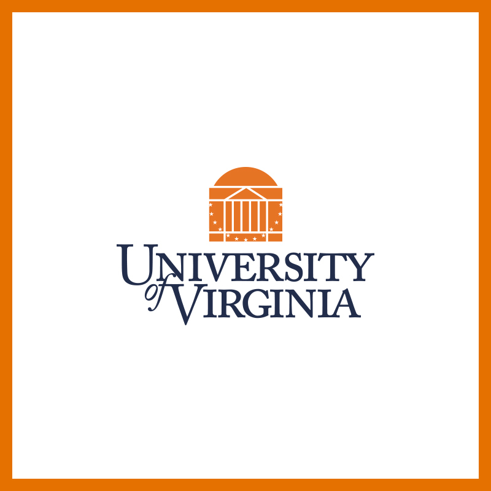
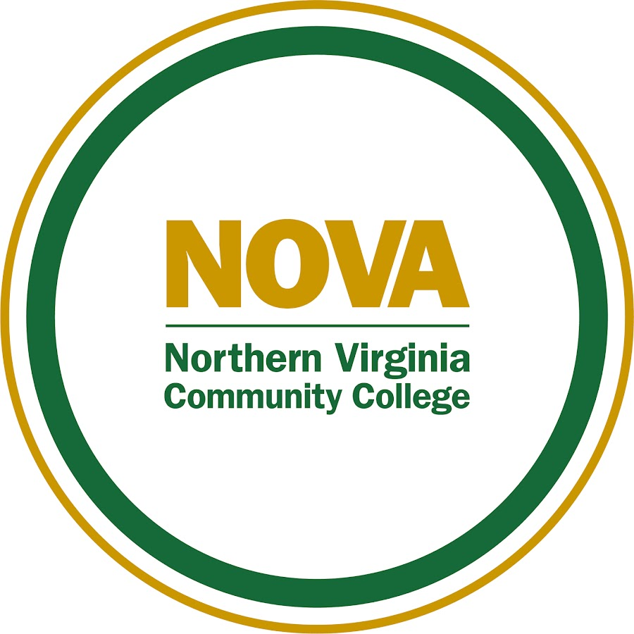
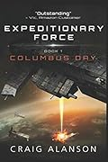
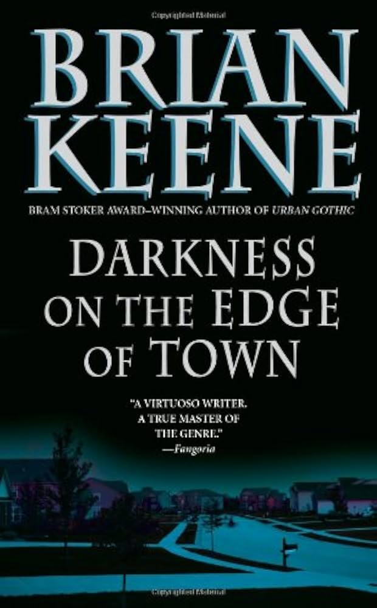
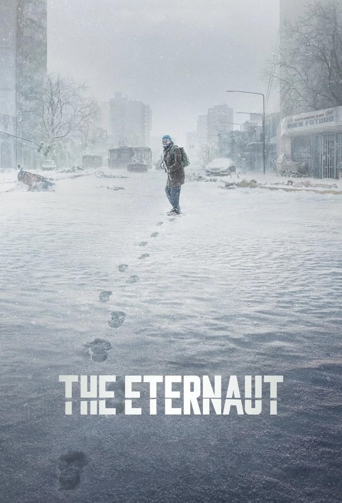

I'm an infrastructure engineer who thinks in systems, not tools. Over 12 years I've learned that the technology matters less than understanding what the business actually needs — and then building something sustainable that delivers it.
Most of my career has been in End User Computing: making sure people can get to their desktops, apps, and data reliably, whether that's VDI, physical endpoints, or cloud workspaces. I've worked in regulated environments where downtime wasn't an option, and I've inherited broken platforms that needed to be rebuilt from the ground up. I'm most useful when something needs to go from "barely working" to "actually reliable."

Breezeline (a Cogeco Company)
Oct 2025 - Present · Remote
Promotion & Leadership: Promoted to Senior Specialist and Team Lead (Oct 2025) to own EUC strategy, architecture decisions, and cross-functional platform initiatives. Primary point of contact for all virtual desktop operations across 1,500+ users.
Automation & Image Pipelines: Ansible and PowerShell automation for image builds across Windows 11, Windows Server 2025, and Linux (Ubuntu). What used to take half a day now takes ~45 minutes and is fully repeatable — same-day image, App Volumes push, and production deployment.
PowerShell Platform: Built PowerShell administration modules and reusable libraries to standardize image builds, reporting, and operational tasks across VDI environments.
Endpoint & Thin Client Management: Automated 10ZiG thin client lifecycle — provisioning, firmware updates, drift detection — reducing device-related support calls.
Identity & Backup: SSO integration between Workspace ONE Access and Google Workspace for unified VDI/DaaS/SaaS login. Veeam backup and DR for all Horizon management components, with quarterly recovery tests.
Security & Monitoring: CrowdStrike Falcon deployment and VDI optimization — agent tuning for non-persistent desktops, exclusion policies to prevent image bloat, App Volumes integration for security baseline. ControlUp monitoring with automated remediation for login storms, stuck profiles, and high-CPU processes.
Communication & Acquisition: Zoom VDI media offloading for remote call center operations. Led domain consolidation during Cogeco acquisition of Breezeline — cross-domain trust configuration, infrastructure migration, AD/DNS/GPO/certificate service cutover. Extended VDI platform to Cogeco's Burlington, ON headquarters.
Expanded Scope: Implemented internal PAM (Privileged Access Management) for securing administrative access. Advised on Data Center VDI architecture for offshore vendor onboarding. Built AI agent pipelines to accelerate script creation, automation development, and documentation — not just prompting, but structured flows producing consistent, reviewable output.
Key Technologies: Omnissa Horizon, App Volumes, DEM, FSLogix, Workspace ONE Access, CrowdStrike Falcon, Zoom (VDI offloading), Ansible, Semaphore, PowerShell, Packer, Chocolatey, ControlUp, Zabbix, Prometheus, Grafana, Veeam, 10ZiG, PAM, AI/LLM tooling
Breezeline
Sep 2023 - Oct 2025 · Remote
Agile Implementation: Applied Kanban methodology and user story development to deliver multi-environment VDI solutions, reducing configuration errors by 80% through iterative deployment.
Thin Client & Workspace Management: Managed 10ZiG thin client deployments, firmware updates, and integration with Workspace ONE and ManageEngine for fleet management.
Automation: Built image and application pipelines using Packer, Ansible, PowerShell, and APIs to automate Windows 11 builds, AppVolumes packaging, and golden image rollouts.
Key Technologies: Omnissa Horizon, App Volumes, DEM, FSLogix, KACE, ManageEngine MDM, Ansible, PowerShell, Veeam
United States Senate Federal Credit Union
Mar 2020 - Sep 2023 · Alexandria, VA
Agile Leadership: Implemented Agile practices including Kanban, backlogs, and retrospectives to improve transparency and increase productivity across engineering teams.
VDI & Mobile Workforce Solutions: Spearheaded EUC transformation by deploying Workspace UEM, SSO, and VDI infrastructure for 150+ remote employees during COVID-19 mobilization.
Cross-functional Collaboration: Led multidisciplinary teams including SecOps, networking, and executives to plan, design, and upgrade production systems while maintaining 99.9% uptime.
Mentoring & Training: Created department-wide training materials, authored system playbooks, and mentored System Engineers, Administrators, and Specialists on core systems.
Key Technologies: VMware vSphere, Workspace UEM, Hybrid Azure AD, VeloCloud SD-WAN, PowerShell, Jira, Confluence, Zero-trust Architecture
United States Senate Federal Credit Union
Sep 2016 - Mar 2020 · Alexandria, VA
End User Computing Foundation: Administered VMware Workspace One SSO, Horizon VDI, and MDM components, building foundational EUC infrastructure for 120+ employees.
Multi-Platform Management: Supported comprehensive endpoint ecosystem (Windows, Linux, Mac, iOS, Android) ensuring seamless interoperability and consistent user experience.
Automation Development: Engineered PowerShell and Python automation scripts for issue detection, remediation, and system efficiency improvements.
Key Technologies: VMware Workspace One, Horizon VDI, Windows Enterprise Domain, Configuration Manager, PowerShell, Python, Jira, Confluence
VMware Omnissa Horizon (formerly Horizon), App Volumes, Dynamic Environment Manager (DEM), FSLogix, VMware vSphere, vSAN, NSX, Tanzu; VDI architecture and deployment, GPU-backed virtual desktops, thin client management (10ZiG), virtual application delivery, user profile optimization
KACE, ManageEngine MDM, VMware Workspace UEM, Microsoft Intune, Configuration Manager (SCCM), Autopilot; Multi-platform endpoint management (Windows, Linux, macOS, iOS, Android), zero-trust architecture, endpoint provisioning and compliance
Windows 10/11 optimization, custom image creation, HashiCorp Packer, Ansible, PowerShell automation, Python scripting; Infrastructure-as-code, automated provisioning, compliance reporting, user experience optimization
Kanban implementation, user story development, backlog management, retrospectives; Cross-functional team leadership, stakeholder engagement, continuous improvement practices, technical mentoring and training
Jira and Confluence administration (on-premise/cloud), Azure DevOps, Git version control, SharePoint; Agile workflow facilitation, documentation management, team collaboration optimization
Microsoft Azure (Entra ID, resource management), hybrid cloud architectures, Docker containerization, Dell PowerEdge/HCI, NetApp/HPE storage solutions, network virtualization (SD-WAN, NSX)
Microsoft | 2026
ICAgile | 2022
Microsoft | 2023
Microsoft | 2023
VMware | 2022
VMware | 2020
Microsoft | 2019
|

University of Virginia: School of Continuing and Professional Studies
Bachelor of Interdisciplinary Studies (BIS), Information Technology 2023 - 2027 |
|

Northern Virginia Community College
Associate of Science (AS), Information Technology 2018 - 2020 |
| Topic | Started | Status | Progress | Resources |
|---|---|---|---|---|
| Securing the Cyber World (UVA BIS) | Aug 2026 | In Progress | Active | UVA SCPS |
| GitHub Actions / CI-CD Pipelines | Aug 2026 | In Progress | Active | GitHub Docs, hands-on lab |
| Terraform (IaC) | Sep 2026 | Starting | Early | HashiCorp Learn, lab environment |
| Python — OOP & API scripting | Jul 2026 | In Progress | Active | Projects + UVA coursework |

Craig Alanson
72%
Brian Keene
Finished June 2025
Starts as a slow burn but when it ramps up, it becomes a thrilling watch that keeps you engaged. The set design and atmosphere are top-notch.